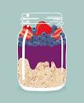

Overnight Oats

Description
Overnight oats is a nutritious and easy-to-make breakfast dish made by soaking rolled oats in milk or yogurt overnight. The oats absorb the liquid and can be flavored with various fruits, nuts, and spices to create a delicious and healthy meal.
Ingredients
- ½ cup Quaker® Oats (Quick or Old Fashioned, uncooked)
- ½ cup non-fat milk
- ½ cup non-fat plain Greek yogurt
- 1 teaspoon chia seeds (Optional)
- 1 cup fresh mixed berries and fruit
Steps
- Add Quaker® Oats to your container of choice and pour in milk
- Layer Greek yogurt, chia seeds and mixed fruit and berries
- Refrigerate overnight and enjoy in the morning!